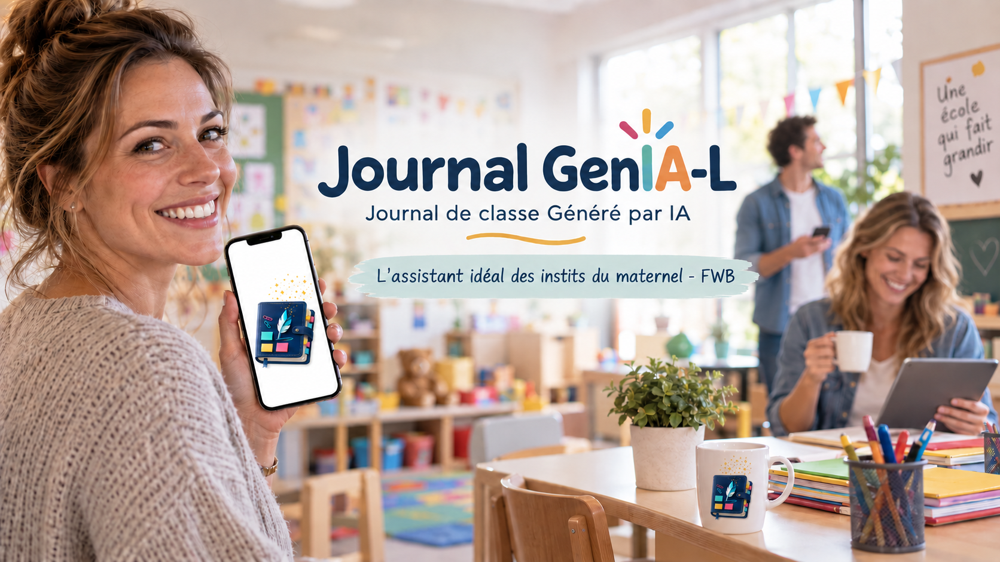
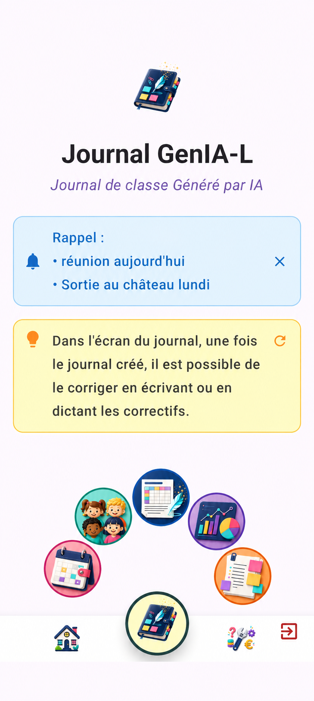

Journal de classe Généré par IA
Conçu par et pour les enseignants du maternel en FWB. Finies les heures interminables le soir ou le week-end : centralisez la gestion de votre classe au creux de votre main avec le meilleur des assistants.

Naviguez à travers les visuels de l'interface et du projet.

Journal GenIA-L combine la puissance de l'intelligence artificielle et une ergonomie fluide pour accélérer vos journaux de classe, vos préparations, vos évaluations d'élèves sur smartphone ou tablette. Pensé pour s'adapter aux réalités administratives et pédagogiques de la FWB (Référentiel), c'est un véritable assistant au quotidien qui vous laisse vous concentrer sur l'essentiel : les apprentissages et les élèves.
Vos données pédagogiques vous appartiennent. Tout est stocké sur votre appareil, avec une option de sauvegarde et de synchronisation sécurisée sur votre propre Google Drive personnel. Aucun partage avec des tiers, aucune exploitation commerciale de vos données.
L'outil est conçu en Belgique et pour vous, en tenant compte de vos besoins en classes maternelles (accueil, M1, M2, M3) et des exigences de suivi des apprentissages et codification des compétences.
Des outils puissants conçus pour réduire radicalement votre charge administrative.
Préparations rédigées suite à une dictée ou saisie assistée, retravaillées par IA et alignées FWB. Génération automatique des semainiers, rapide et accessible même dans l'effervescence de la classe.
Un doute sur une compétence, un attendu ? En quête d'une idée d'activité originale ? Sollicitez l'intelligence artificielle pour générer ou modifier vos préparations et obtenir des suggestions instantanées.
Suivi des compétences, rapports d'évaluation basés sur vos notes et photos capturées. Proposez anonymement vos préparations et récupérez celles de la communauté.
Découvrez des exemples concrets de situations vécues avant et après l'adoption de Journal GenIA-L.
Le Dimanche à 19h00 :
"Je passe mes dimanches à recopier des fiches de prépa et à chercher quel code du Référentiel FWB correspond à mon atelier..."
En sortie de classe de maternelle à 16h30 :
"J'ai 25 petits épuisés, des notes sur des post-it perdus, et aucune trace écrite centralisée."
Le Vendredi à 17h00 :
"Miracle ! Ma semaine complète est prête, structurée et classée. Mon week-end m'appartient enfin."
Invitée en dernière minute au resto ce soir :
"Je dicte deux préparations et le contenu prévu de ma journée. En 12 minutes, j'ai les documents prêts avec tous les codes FWB intégrés !"
« J'ai toujours détesté le côté administratif de mon métier, mais grâce à cette application, je me sens soutenue et motivée. Merci ! »
Brabant Wallon
« Facile à utiliser sur smartphone ou tablette, cette application s'impose comme un véritable gain de temps. Les tâches administratives devenant moins laborieuses, elle nous aide à n'oublier aucune compétence. Un bel outil ! »
Brabant Wallon
L'application propose un accès à l'IA limité pour découvrir, puis une période d'essai de 7 jours résiliable sans frais, dans l'abonnement Google Play. L'abonnement donne accès à l'ensemble des fonctionnalités avancées d'assistance par IA, de synchronisation entre appareils et d'accès à la communauté des préparations.
Scannez avec votre smartphone pour télécharger l'application.